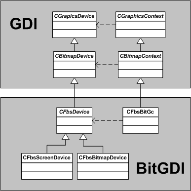

A font is a set of characters of matching size (height) and appearance. In order to be displayed each character must ultimately be drawn as a series of pixels (a bitmap). Symbian can store fonts in bitmap or vector form. A vector font (for example, an OpenType font) must be converted to bitmaps (or rasterized) before it can be drawn. Symbian caches and shares bitmaps for performance and memory efficiency.
Application developers can use Font and Text Services for selecting fonts for displaying text according to various criteria (size and typeface).
Device creators can add fonts and font rasterizers. Fonts can be included in the ROM or installed on user drives.
Points (1/72th inch) and twips (a twentieth of a point) are absolute measurements of distance and specify device-independent size. Pixel sizes are only relevant for a specific graphics device. Each graphics device (screen or printer) must provide a mechanism for converting between pixels and twips.
A named set of characters of matching size (height) and font style (normal, bold, italic, underline). Times Roman 14 point bold is an example of a font.
A group of fonts with similar appearance. The typeface does not include the size or font style. Times is an example of a typeface. Typefaces are sometimes referred to as font families.
Typefaces are grouped generically as mono-spaced, variable width, serif, sans-serif and symbol. This allows the grouping of typefaces that have similar characteristics, so that an alternative font can be selected when an exact match is not found. This means that applications can display text relatively accurately when a specific font is not available.
A font that is stored as vector data, which can be rasterized to any pixel size. OpenType fonts are sometimes simply called open fonts. An open font can only be used with a corresponding font rasterizer. The Font and Bitmap Server caches rasterized fonts into bitmap form.
OpenType is an open source vector font format, which is similar to TrueType. Like TrueType fonts, OpenType fonts can contain font hinting information. However the font rasterizer's use of the font hinting information in OpenType fonts is restricted by a software patent.
A single element (such as a letter, number, ligature, symbol or punctuation mark) of written language. Each character has a unique number (its Unicode code point).
A graphical representation of a character in a specific font. The mapping between a character and a glyph is not always direct. For example, a character may be represented by different glyphs, depending on the context.
Measurements (such as maximum height) that are common to all of the characters in a font.
Measurements (such as character width) that apply to an individual character within a font.
A font stored as bitmap glyphs. The size of a font is described in pixels. However, the actual size is dependent on the pixel size of the graphics device.
The process of converting drawing instructions into bitmap data. Fonts provided in vector form (OpenType fonts) must be rasterized into fixed size fonts before they can be used.
A virtual font or typeface created from characters from other fonts. The component fonts must be open fonts or other linked fonts. Linked fonts are typically used where a preferred font does not contain all of the characters in the character set. One of the typefaces in a linked font must be designated as the principal typeface from which any unspecified default metrics or characters are used.
In some scripts some characters are drawn differently depending on the adjacent characters. This means that different glyphs are used to represent a particular character in different contexts. Contextual shaping is the selection of the appropriate glyph from several glyphs that represent a particular character depending on the context.
In Latin scripts, contextual shaping is normally used only when simulating handwriting. For example, the glyph used for the letter p might depend on whether the letter is at the start, middle or end of a word, as shown in the following diagram. For example, when it is in the middle of the word, it might have a "tail" on both sides to join it to the letters that appear before and after.
Contextual shaping is an essential feature of some scripts, including Arabic and many Indian and East Asian scripts, such as Devanagari, Kannada, Telugu, Tamil, Bengali, Malayalam and Gurmukhi. For this reason, support for contextual shaping is sometimes referred to as Brahmic support.
A plug-in that performs the contextual shaping for scripts that require this feature. Text shapers are font and language specific.
A default font that is used when no font is specified.
The Font and Text Services components are closely integrated with the Font and Bitmap Server, GDI, BitGDI and Window Server components in the Graphics package. Font size is only meaningful in the context of the current graphics device and its pixel size. Open fonts must be rasterized in the context of the current graphics device. The diagram below shows how BitGDI implements Graphics Devices and Contexts.
Note that the names of the BitGDI classes begin with CFbs.
Applications access font services through the Font and Bitmap Server (FBSERV) which caches font bitmaps in a shared heap. The Font and Bitmap Server ensures that there is only ever a single instance of a particular glyph bitmap in memory. However, eXecute In Place (XIP) ROM-based bitmaps (including fonts) are used in place and are not copied into the heap.
Use of the Font and Bitmap Server is transparent to clients of the Window Server. The Window Server client session (RWsSession) automatically creates an RFbsSession and stores it in thread local storage (TLS). The Font and Bitmap Server provides two client-side classes for fonts: CFbsFont and CFbsTypefaceStore. These find and use the session in TLS automatically. Clients of the Window Server are therefore automatically clients of the Font and Bitmap Server and need perform no explicit session management.
Classes representing fonts, such as CFbsFont (on the client side) and CBitmapFont (on the server side), are derived from the abstract class CFont.
The Font Store lives in the Font and Bitmap Server and contains all of the fonts on the device and the font rasterizers required to render them. The Font Store loads font files when the phone starts up. It scans all of the drives on the device so that new fonts can be installed from user drives. Font files can be loaded by the Font Store while the phone is running. However, font rasterizers can only be installed by restarting the phone. If a new font requires a font rasterizer to be installed, the phone must be restarted before the font can be used.
Open font rasterizers are implemented as ECOM plug-ins. An open font file (represented by COpenFontFile) can contain one or more open fonts in proprietary vector format. A corresponding font rasterizer plug-in (COpenFontRasterizer) must convert the vector data into bitmaps that the Font and Bitmap Server can cache and access using the CBitmapFont and COpenFont APIs. Applications use rasterized open fonts by using CFbsFont in exactly the same way as native bitmap fonts. The open font framework means that Symbian can support any font in any format. There is a performance impact associated with open fonts, however, as they must be rasterized.
Text shapers (CShaper) are used for contextual scripts, which require their glyphs to be modified according to the adjacent characters. Text shapers are font and language specific.
The Font and Text Services collection is made up of the following components:
Font Store. This manages font matching, ownership and rasterizing.
FreeType Font Rasterizer. This open source plug-in rasterizes OpenType fonts. More information can be found at www.freetype.org. This rasterizer is normally loaded by default.
ICU Layout Engine Component. A plug-in that performs contextual shaping for specific scripts that require this feature. When a function, such as CFbsBitGc::DrawText() draws text in one of these scripts, internally a text shaper is used to convert the string of characters into the appropriate series of glyphs.
Reference Fonts. This provides a collection of reference font files including bitmap and OpenType fonts. By default the Symbian platform supports the DejaVu OpenType typeface (which includes variable-width, monospaced, serif and sans serif fonts) and legacy Calculator and Agenda symbols (which are bitmap fonts).
Note: The iType Font Rasterizer is an OpenType font rasterizer from MonoType Imaging®. This provides additional features compared to the FreeType font rasterizer, such as four color blending, which is required for outline and shadow fonts. This component is not provided by the Symbian Foundation because it belongs to Monotype. However, the Symbian platform has test cases for the four color blending that the iType Font Rasterizer provides. These test cases can be used by device creators who obtain this font rasterizer from MonoType.
Copyright ©2010 Nokia Corporation and/or its subsidiary(-ies).
All rights
reserved. Unless otherwise stated, these materials are provided under the terms of the Eclipse Public License
v1.0.